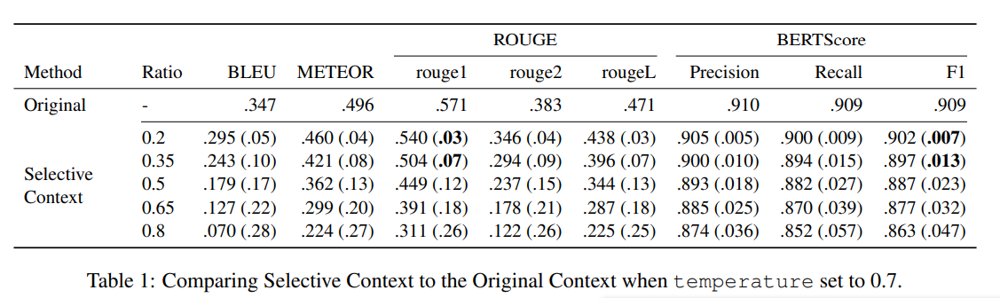

prompt压缩
prompt压缩技术可以减少输入prompt的长度，同时保持各种任务的性能。
Selective Context
出自《Compressing Context to Enhance Inference Efficiency of Large Language Models》-EMNLP 2023。使用了一个很简单但有效的方法。
算法介绍
作者提出了self-information的概念，用来衡量了一段文本相对与一个language model所蕴含的信息。
self-information计算也极其简单。
$$
I(x) = -log(P(x))
$$
P指语言模型，但不需要是大模型本体，可以是小号的LLMs，例如1.3b的OPT和OpenAI-Curie(6.3b)。
prompt压缩的整体过程十分简单。
- 首先计算文本中每个短语的self-informaiton。
- 再根据想要的压缩比设置百分位数，得到阈值。
- 最后删去低于阈值的短语。
我们也可以直接上代码：
1 | def _get_self_info_via_gpt2(self, text: str) -> Tuple[List[str], List[float]]: |
实验结果
使用了以下三个数据源作为测试数据：
- http://ShareGPT.com：收集用户与ChatGPT对话记录的网站
- Arxiv
- BBC News

LLMLingua
LLMLingua是Huiqiang Jiang, Qianhui Wu, Xufang Luo等出自微软的研究者提出的一系列prompt压缩算法。
LLMLingua
占位
LongLLMLingua
zhanw
LLMLinguav2
暂无
prompt压缩
https://lijianxiong.work/2024/20240429/